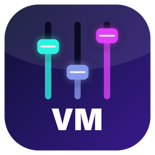
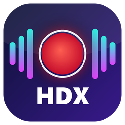

Programmi
Tutti gratuiti, per Windows, e pensati fin dal primo giorno per chi usa uno screen reader.
Ogni programma ha la sua pagina con il download, la guida da leggere online e le novità di ogni versione. Si aggiornano da soli quando esce una versione nuova.
-
Gram Access
Versione 2.1.9 del 30 ottobre 2026Telegram accessibile: chat, gruppi, canali, chiamate e messaggi vocali.
-

HDX VM
Versione 1.5.0 del 17 ottobre 2026Voicemeeter accessibile: dove va l'audio, i volumi e il mixer di ogni canale.
-
PCloud Access
Versione 1.1.1 del 31 ottobre 2026pCloud accessibile: file, cartelle, trasferimenti, link e condivisioni.
-
Tube Player
Versione 1.2.8 del 31 ottobre 2026YouTube accessibile: ricerca, canali, playlist, lettore, download e raccolte.
-

HDX Recorder
Versione 1.0.2 del 31 ottobre 2026Registrazioni audio e video, dirette radio con la regia, mixer, effetti e intelligenza artificiale.